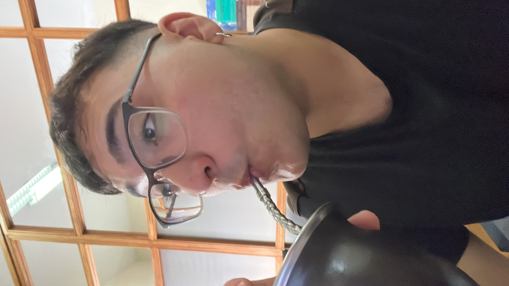

Docente en formación & Gestor de Proyectos de Impacto
Actualmente curso el Profesorado de Matemáticas en el Instituto de Profesores Artigas. Mi enfoque está en la docencia y en buscar formas prácticas de aplicar conceptos geométricos y algebraicos en la vida real.
Trabajo como becario administrativo en un liceo de Montevideo. Me encargo de la gestión de plataformas institucionales, control de asistencias de docentes y organización de procesos para optimizar el funcionamiento del centro.
Lidero un proyecto de economía circular donde transformamos plástico reciclado en rampas de accesibilidad y mobiliario modular. Aplico mi experiencia diaria en la planta Circula para diseñar procesos eficientes de fundición y prensado.
Diseño mobiliario personalizado combinando madera OSB, resina epoxi y estructuras de metal. Además, disfruto optimizando flujos de trabajo utilizando automatizaciones en el ecosistema Apple (Atajos de iOS).